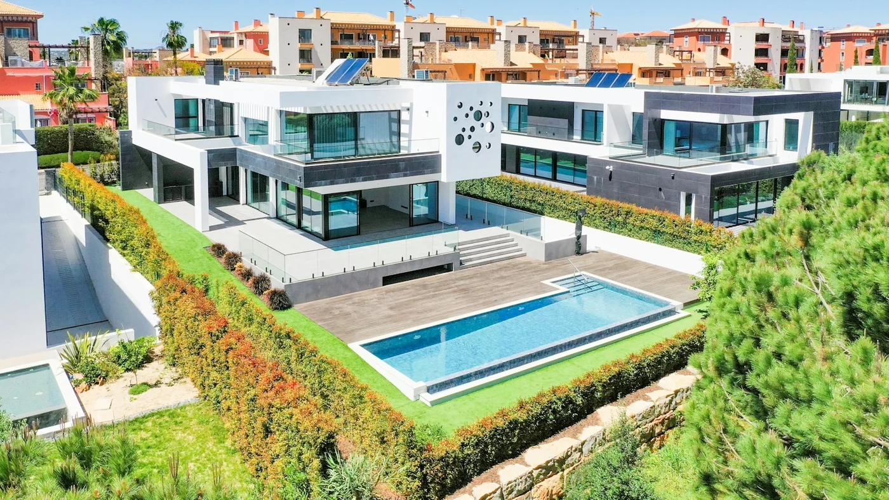
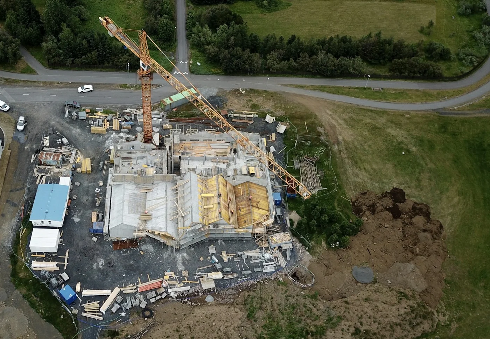
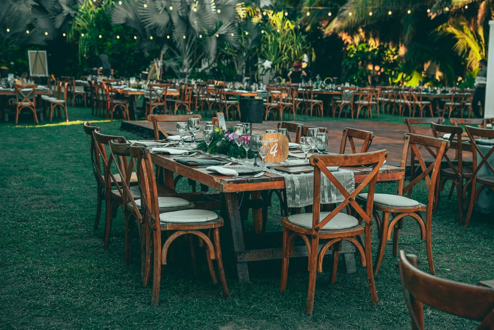
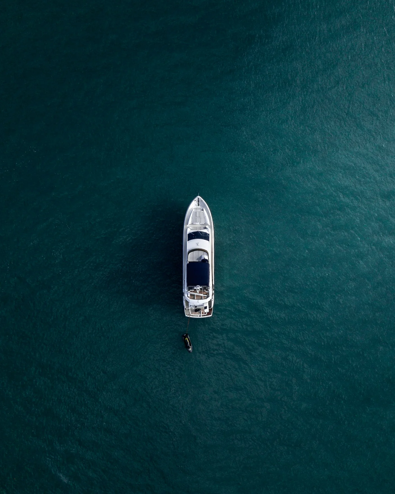

Capa, imagens de apoio e compartilhamento
Marcos Paulo Prado
Pão de Açúcar e Baía de Guanabara ao nascer do sol, Rio de Janeiro.
Ver fotografia original no Unsplash ↗Fotografia e autoria
A apresentação e os cartões de serviços usam fotografias reais de referência. Elas mostram cenários e possibilidades de produção e não são apresentadas como trabalhos de Rodrigo Victor.
As fotografias abaixo estão disponíveis sob a licença Unsplash, que permite uso comercial. Os arquivos foram redimensionados e otimizados para a web, preservando as cenas fotografadas.
Capa, imagens de apoio e compartilhamento
Pão de Açúcar e Baía de Guanabara ao nascer do sol, Rio de Janeiro.
Ver fotografia original no Unsplash ↗
Imobiliário
Residência com piscina em Vilamoura, Algarve, Portugal.
Ver fotografia original no Unsplash ↗
Arquitetura e construção
Vista aérea de um canteiro de obras com guindaste.
Ver fotografia original no Unsplash ↗

Turismo e diferenciais
Paisagem do Pão de Açúcar e da Baía de Guanabara, Rio de Janeiro.
Ver fotografia original no Unsplash ↗
Produção audiovisual
Embarcação vista do alto em Rang Yai Island, Tailândia.
Ver fotografia original no Unsplash ↗A fotografia de Rodrigo Victor na seção Sobre e o filme “Histórias à beira-mar”, com seu quadro de apresentação, foram fornecidos para publicação pela responsável pelo site. O filme integra o portfólio da VISIONAIR.
Conheça o portfólio